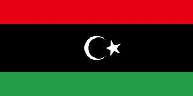

The Country & People of Libya
This page contains links to sites in Libya and Libya related sites.
For Middle East, North Africa, Arab and regional information visit Arab Countries
Most of Libya is part of the Sahara desert; the population is restricted to a coastal strip along the Mediterranean and a few widely scattered oases in the Libyan desert, in the east, and the Fazzan region, in the south. The discovery of oil in 1958 transformed Libya from a poor agricultural country into one of the world's leading petroleum producers, with vast sums to spend on social, agricultural, and military development. Petroleum accounts for 95% of export earnings and about a third of national income; Libya is also an important producer of natural gas. Major crops include cereals, olives, fruits, dates, and vegetables. Lower oil prices and economic sanctions arising from the Lockerbie incident (see below) hurt the economy in the 1990s. The majority of the inhabitants are Arabs, but there are scattered communities of Berbers and, in the southwest, many of mixed Berber and African descent. There are large numbers of foreign workers in Libya; in 1995 several thousand of them without proper papers were expelled. Islam is the official religion (most Libyans are Sunni Muslims), and Arabic is the official language.
History
At various times in its history the territory that is now Libya was occupied by Carthage, Rome, Arabia, Morocco, Egypt, and Spain. It was part of the Ottoman Empire from 1551 to 1911, serving in the 18th cent. as a base for pirates who, in return for immunity, provided large revenues to the local ruler.
Libya was seized by Italy in 1911, but Libyan resistance continued until the 1930s. During World War II, as an Italian colony, it was one of the main battlegrounds of N Africa, passing under an Anglo-French military government when the Axis were defeated in the area in 1943.
In accordance with a UN decision, in 1951 the country became independent as the United Kingdom of Libya, with King Idris I as ruler.
Idris was ousted in 1969 in a coup led by Col. Muammar al-Qaddafi, who established an anti-Western dictatorship. British and American bases were closed in 1970, and unification was sought, unsuccessfully, with several other Arab countries. An implacable foe of Israel, Qaddafi used Libya's vast oil wealth to create an extensive social welfare system and to help support the Palestinian guerrilla movement, particularly radical elements.
In 1979 Libya intervened in Uganda to help keep Idi Amin in power, and in 1981 it dispatched troops into neighboring Chad (Libya had occupied the disputed Aozou Strip, in N Chad, in 1973), withdrawing most of them later that year. Qaddafi's forces continued to take sides in Chadian fighting, for a time occupying much of N Chad.
In 1990 the dispute over the Aozou Strip was submitted to the International Court of Justice, which ruled in Chad's favor, and the strip was returned to Chad in 1994.
As a member of OPEC, Libya has been a leading exponent of limiting production and increasing prices of petroleum. Since 1986 Libya has attempted to form a union with the Arabic countries of the Maghreb, especially Algeria and Tunisia.
In the late 1980s the U.S. took action against Libya for its backing of terrorist activities against U.S. citizens, including an air strike (1986) on Qaddafi's residence and other sites in Libya.
In 1992 the UN Security Council accused Libya of supporting state terrorism and called for a ban on air flights and arms sales to it unless suspects in the Lockerbie and another airplane bombing were turned over to the U.S., Britain, and France. Libya's foreign assets were also frozen.
In Apr. 1999, Libya handed over the suspects in the Lockerbie crash to the UN, which lifted its sanctions, but those imposed by the United States remained in place.
In Dec., 1999, Qaddafi pledged not to aid or protect terrorists.
Libya agreed in 2003 to a $2.7 billion settlement with the families of the victims. and that and a revised settlement for viction of the UTA bombing led the UN Security Council to lift the sanctions imposed more than a decade earlier. The last of three payments due under the 2003 agreement, however, was not made until late 2008. In December 2003, after negotiations with the United States and Great Britain, the government renounced the production and use of chemical, biological, and nuclear weapons and agreed to submit to unannounced international inspections.
Subsequently (Mar., 2004), Libya acknowledged that it had produced and had stockpiles of chemical weapons. As a result of these events, the United States lifted most sanctions and resumed diplomatic relations with Libya, although it continued to list Libya as a state sponsor of terrorism until mid-2006.
In Sept., 2008, Italy and Libya signed a memorandum under which Italy agreed to pay $5 billion over 20 years as compensation for its three decades of colonial rule in Libya.
In Feb., 2011, antigovernment protests in Libya quickly became a full-scale uprising, as the government lost control of Benghazi and NE Libya as well as a number of cities in NW Libya. By the end of the month, however, the government had brutally suppressed protesters in the capital, and in early March it recaptured many cities it had lost to the rebellion. Hundreds of thousands of foreigners fled the country. The International Criminal Court issued arrest warrants in June for Qaddafi and other government members in connection with the killing of protesters.
As Qaddafi's forces advanced on Benghazi, the UN Security Council approved (March) a no-fly zone over Libya; it was enforced by aircraft from a mix of NATO and Arab nations, which at times also attacked government ground forces. The Benghazi-based rebels, who established a governing council, fought a seesawing contest for central N Libya. Misratah and the Nafusa Mtns. became the most signifcant battlegrounds in the west, and after repulsing government forces there, the rebels made some advances by midyear. The rebels benefited from aid from some Western and other nations, and their National Transitional Council (NTC) was recognized by some nations. In August, increasing rebel successes culminated in the fall of Tripoli; in September, the NTC was recognized by the United Nations as Libya's legitimate government.
Rebel forces captured Sirte and Bani Walid, two remaining Qaddafi strongholds, in Oct., 2011; Qaddafi was killed while trying to flee Sirte. At the end of the month, Abdurrahim el-Keib was appointed prime minister by the NTC, and a new cabinet was named in November. The situation remained unsettled, however, with occasional fighting erupting between rival militias and tribes, and in Feb., 2012, leaders in E Libya called for the establishment of the autonomous region of Cyrenaica there, a move that was denounced in W Libya.
In July, the 200-members of the national congress were elected, with no group clearly dominating the result. In September, Mustafa Abu Shagur, who had served as a deputy to el-Keib, was chosen as prime minister, but he proved unable to form an acceptable government. Ali Zidan, a former diplomat and exile, was chosen to replace him in October, and formed a government. Also in September the U.S. ambassador was killed in an attack by Islamic militants on the Benghazi embassy. The attack led to a crackdown on Libyan militias, but they remained a significant force and problem in the country, and in subsequent months were a factor in a number of deadly clashes. In Jan., 2013, the president of the national congress survived an attempted assassination.
The congress in May passed a law banning senior officials in the Qaddafi regime from the government; its enactment was forced by armed groups that surrounded government offices. In December the congress voted to make Islamic law the basis of Libyan law, and also voted to extend its mandate by a year, adopting a plan that called for a new constitution to be drafted by Aug., 2014, and a parliament to be elected by Dec., 2014. Meanwhile, groups favoring a federal state sought to establish a government in Cyrenaica and seize control of the region's oil resources; Berbers also interrupted oil and gas shipments in an attempt to win political recognition. Such political, and significant religious, regional, and tribal, divisions have thwarted the establishment of a unified national government, and stoked violence and insecurity. In Mar., 2014, after an oil tanker eluded the Libyan navy and left from the port of Sidra in Cyrenaica, Zeidan was dismissed.
Deputy Prime Minister Abdullah al-Thinni became prime minister in April but then announced his resignation following an attack on his family. In May Ahmed Maiteg was elected to succeed al-Thinni under chaotic circumstances, and al-Thinni refused to cede power; ultimately Maiteg's election was ruled invalid. Also in May, forces loyal to former general Khalifa Heftar began attacks against the government (which Haftar accused of supporting terrorism) and against Islamists. An election for a House of Representatives was held in June, but turnout was low; candidates were required to run as individuals instead of on party slates, and in the resulting body the influence of Islamists was greatly diminished. Prior to the election the cabinet called for the new legislature to be based in Benghazi.
The political situation subsequently deteriorated as Islamist and regional militias and government forces fought for control of Tripoli and Benghazi. In August and September, Islamists from Misrata established control over Tripoli and reestablished the national congress, in which Islamists had been dominant. Other Islamists fought government forces for Benghazi, seizing control for a time. In October the army regained much of the city, but control subsequently seesawed as fighting there continued. The newly elected House meanwhile established itself in Tobruk, and by August Libya had rival legislatures and prime ministers, with al-Thinni again holding that post in Tobruk; his government was generally recognized internationally. In November, the Libyan supreme court, which had remained the Tripoli, declared the election of the House of Representatives unconstitutional; the House denounced the verdict, saying it was influenced by Islamists militias.
Forces aligned with the rival governments subsequently fought for control of the country's oilfields and oil terminals, and in 2015 militants aligned with the Islamic State became a significant third force, based primarily in Surt (Sirte), which it largely controlled. In early 2015 the Tobruk government overturned the ban on the participation of former Qaddafi officials in the government, and subsequently Khalifa Haftar was appointed to lead its military forces. Some members of the rival parliaments signed a political agreement in Dec., 2015, that called for both bodies to participate in a government of national accord, but the heads of the legislatures did not participate and it was unclear if militias would comply with a new government.
General Info
Cities, towns, municipalities, places, flag, maps, useful Information....
Business
Economy, reports, statistics, banks, directories, jobs, investment, promotion....
Culture
General resources, heritage, art, literature, photography, cinema, music, song, dance, cultural, scientific, environmental, sporting entities & info....
Education
Schools, colleges, academies, universities, polytechnics, institutions, research, resources, projects....
History
Ancient & modern history, human rights, politics & political parties, related sites, articles....
Media
Newspapers, magazines, news, newsletters, news agencies, radio, TV, internet, articles, reports, cartoons....
Organizations
Government, ministries, overseas missions, embassies, corporations, organizations, industrial entities, centers, public hospitals, institutions,
societies, foreign entities....
Travel
Airlines, air, sea & coach charters services, travel, tours, guides, hotels, resorts, inns, hostels, health, travel tips, weather....
Gateways
Gateways, search engines and directories to country related sites and information....
Arab Countries
Arab World: Middle East, North Africa, Arab and regional information. Resources to other Arab countries....
Cities, Towns, Municipalities & Places
Flag, Maps, Useful Information....
Banks
Directories, Job Opportunities
Investment & Promotion....
Art, Literature, Photography, Cinema....
Music, Song & Dance....
Cultural, Scientific, Environmental, Sporting Entities & Info
Institutions & Organizations
Research, Resources & Projects
Human Rights, Politics & Political Parties....
Related Sites, Articles....
OnLine News, Newsletters, News Agencies....
Radio, TV, Internet....
Articles, Reports, Cartoons....
Corporations, Organizations, Public Hospitals and Industrial Entities
Centers, Institutions, Societies....
Foreign Entities
Travel, Tours, Guides.... More country info
Hotels, Resorts, Inns, Hostels....
Health & Travel Tips
Weather....
For comments, reports of deadlinks and adding your URL